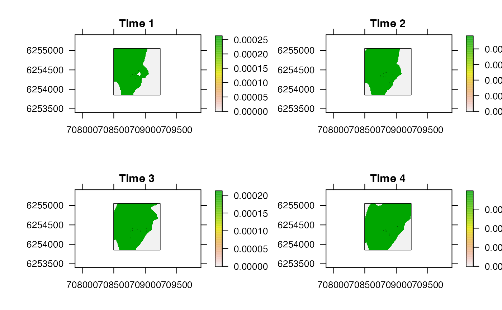

This function plots the spatiotemporal particle histories from a particle filtering (PF) algorithm (the acoustic-container PF, the depth-contour PF or the acoustic-container depth-contour PF). This produces, for each time step, a map of the individual's possible locations (from the AC, DC or ACDC algorithm), with sampled locations (derived via the particle filtering routine) overlaid.
pf_plot_history( archive, time_steps = 1:length(history), add_surface = list(), add_particles = list(pch = "."), forwards = TRUE, prompt = TRUE, ... )
Arguments
| archive | A |
|---|---|
| time_steps | An integer vector that defines the time steps for which to plot particle histories. |
| add_surface | A named list, passed to |
| add_particles | A named list, passed to |
| forwards | A logical variable that defines whether or not create plots forwards (i.e., from the first to the last |
| prompt | A logical input that defines whether or not to pause between plots ( |
| ... | Plot customisation arguments passed to |
Value
The function returns a plot, for each time step, of all the possible locations of the individual, with sampled locations overlaid.
See also
pf implements PF. pf_simplify assembles paths from particle histories. pf_plot_map creates an overall `probability of use' map from particle histories. pf_plot_1d, pf_plot_2d and pf_plot_3d provide plotting routines for paths. pf_loglik calculates the log-probability of each path.
pf implements PF. pf_simplify assembles paths from particle histories. pf_plot_history visualises particle histories. pf_plot_1d, pf_plot_2d and pf_plot_3d provide plotting routines for paths. pf_loglik calculates the log-probability of each path.
Author
Edward Lavender
Examples
#### Implement pf() algorithm # Here, we use pre-defined outputs for speed #### Example (1): The default implementation pf_plot_history(dat_dcpf_histories, time_steps = 1)#>#>#### Example (2): Plot customisation options, e.g.: # Customise bathy via add_bathy() pf_plot_history(dat_dcpf_histories, time_steps = 1, add_surface = list(col = c(grDevices::topo.colors(2))))#>#># Customise particles via add_particles pf_plot_history(dat_dcpf_histories, time_steps = 1, add_particles = list(col = "red"))#>#># Pass other arguments to prettyGraphics::pretty_map() via ... pf_plot_history(dat_dcpf_histories, time_steps = 1, add_polys = list(x = dat_coast, col = "brown"), crop_spatial = TRUE)#>#>#### Example (3): Plot multiple time steps pp <- graphics::par(mfrow = c(2, 2)) pf_plot_history(dat_dcpf_histories, time_steps = 1:4, prompt = FALSE)#>#>#>#>#>#>#>#>graphics::par(pp) #### Example (4): Compare outputs for sampled versus connected particles dat_dcpf_histories_connected <- pf_simplify(dat_dcpf_histories, return = "archive")#> flapper::pf_simplify() called (@ 2022-05-28 18:15:10)... #> ... Getting pairwise cell movements based on calc_distance = 'euclid'... #> ... ... Stepping through time steps to join coordinate pairs... #> ... ... Identifying connected cells... #> ... ... Processing connected cells for return = 'archive'... #> ... flapper::pf_simplify() call completed (@ 2022-05-28 18:15:10) after ~0 minutes.pp <- graphics::par(mfcol = c(2, 4)) pf_plot_history(dat_dcpf_histories, time_steps = 1:4, add_particles = list(pch = 21, bg = "black"), prompt = FALSE)#>#>#>#>#>#>#>#>pf_plot_history(dat_dcpf_histories_connected, time_steps = 1:4, add_particles = list(pch = 21, bg = "black"), prompt = FALSE)#>#>#>#>#>#>#>#>